Partitions de piano en PDF
14 volumes classés par compositeur et par époque, avec sommaire cliquable, biographies des compositeurs et le lien vers le tutoriel vidéo de chaque morceau qui en a un. Chaque achat contient le PDF en 10 langues.
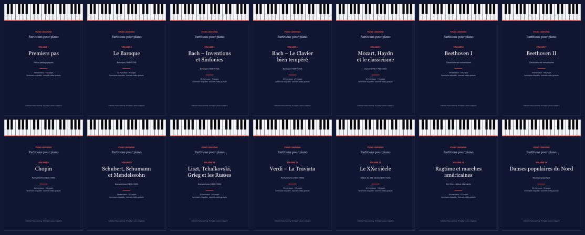
La collection complète
Les 14 volumes : 564 morceaux, 1 933 pages de musique.
Vous économisez 64 % par rapport aux 14 volumes séparés (55,86 €).

Chants de Noël et mélodies faciles
41 morceaux · 54 pages
41 morceaux en arrangements faciles à deux niveaux : 16 chants de Noël et 25 mélodies célèbres.
Volumes séparés
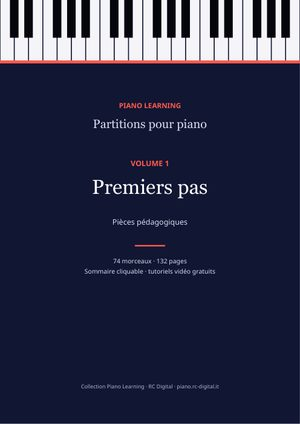
Pièces pédagogiquesVolume 1Premiers pas
Études et pièces faciles : Burgmüller, Czerny, Hanon, Schumann (Album pour la jeunesse), Kuhlau.
74 morceaux · 132 pages
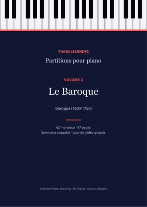
Baroque (1600-1750)Volume 2Le Baroque
Bach (menuets, polonaises, petits préludes, chorals), Haendel, Scarlatti, Rameau, Pachelbel.
62 morceaux · 87 pages
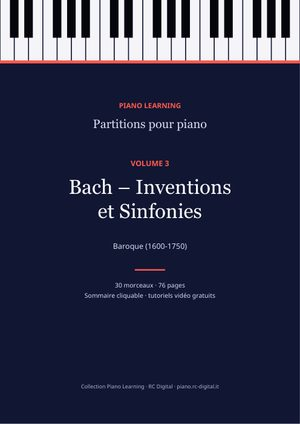
Baroque (1600-1750)Volume 3Bach – Inventions et Sinfonies
Les 15 Inventions à deux voix et les 15 Sinfonias à trois voix, au complet.
30 morceaux · 76 pages
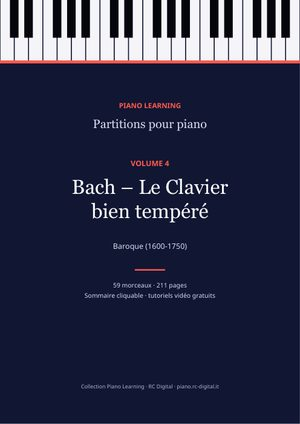
Baroque (1600-1750)Volume 4Bach – Le Clavier bien tempéré
Préludes et fugues du Clavier bien tempéré, Suites anglaises et françaises, Suite BWV 1006a, L'Art de la fugue.
59 morceaux · 211 pages
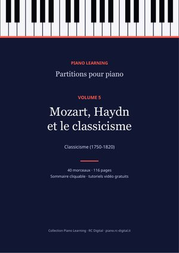
Classicisme (1750-1820)Volume 5Mozart, Haydn et le classicisme
Rondo alla turca, Sonata facile, Fantaisie en ré mineur et d'autres classiques du XVIIIe siècle.
40 morceaux · 116 pages
 Classicisme et romantismeVolume 6
Classicisme et romantismeVolume 6Beethoven I
La Lettre à Élise, la sonate « Clair de lune », la Pathétique, des variations et des sonates.
18 morceaux · 125 pages
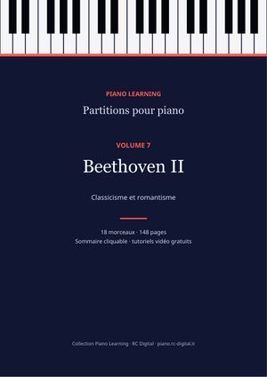
Classicisme et romantismeVolume 7Beethoven II
L'Appassionata et les grandes sonates.
18 morceaux · 148 pages
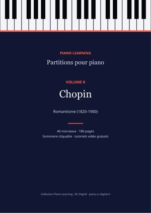
Romantisme (1820-1900)Volume 8Chopin
Les 24 Préludes, des Nocturnes, Valses, Études et Ballades.
46 morceaux · 186 pages
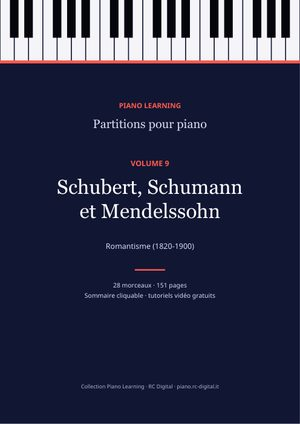
Romantisme (1820-1900)Volume 9Schubert, Schumann et Mendelssohn
Les 8 Impromptus de Schubert, les Scènes d'enfants, les Romances sans paroles, Brahms.
28 morceaux · 151 pages
 Romantisme (1820-1900)Volume 10
Romantisme (1820-1900)Volume 10Liszt, Tchaïkovski, Grieg et les Russes
Consolations, Les Saisons, Peer Gynt, Tableaux d'une exposition et d'autres romantiques.
37 morceaux · 230 pages
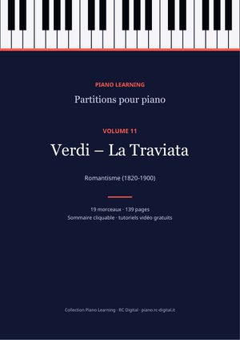
Romantisme (1820-1900)Volume 11Verdi – La Traviata
L'opéra complet réduit pour piano seul, numéro par numéro.
19 morceaux · 139 pages
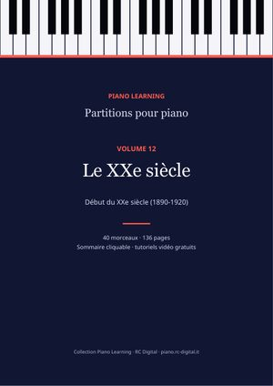
Début du XXe siècle (1890-1920)Volume 12Le XXe siècle
Debussy, Satie, Rachmaninov, Scriabine, Bartók.
40 morceaux · 136 pages
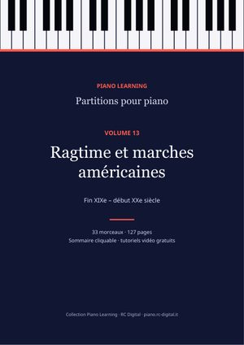
Fin XIXe – début XXe siècleVolume 13Ragtime et marches américaines
Scott Joplin, John Philip Sousa et d'autres.
33 morceaux · 127 pages
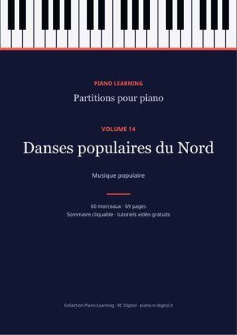
Musique populaireVolume 14Danses populaires du Nord
Danses traditionnelles suédoises et finlandaises.
60 morceaux · 69 pages
Paiement sécurisé avec Payhip et téléchargement immédiat par e-mail. Les partitions sont des éditions libres (domaine public ou Creative Commons) : vous les trouvez aussi gratuitement, morceau par morceau, sur les pages de ce site ; ici, vous les avez toutes, classées dans un seul fichier, avec les crédits complets de chaque édition.